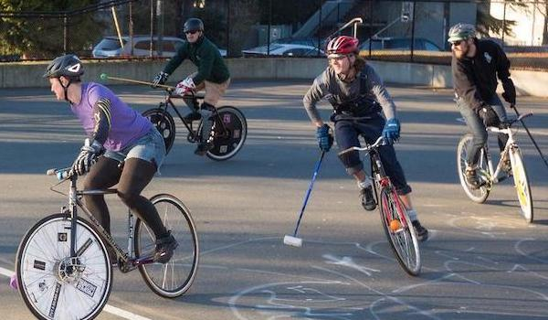
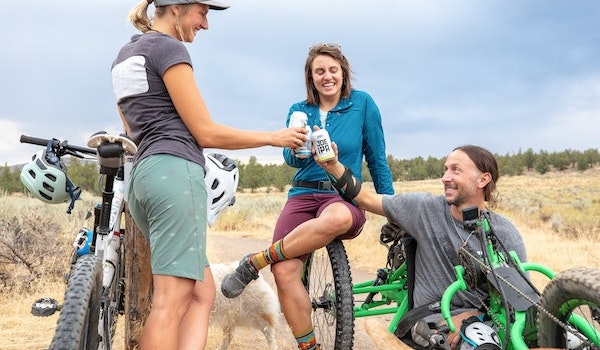
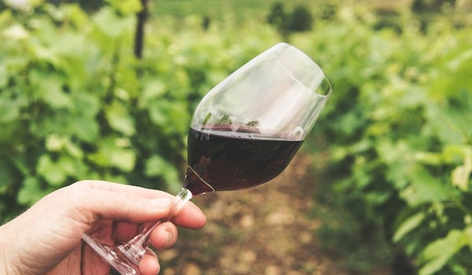
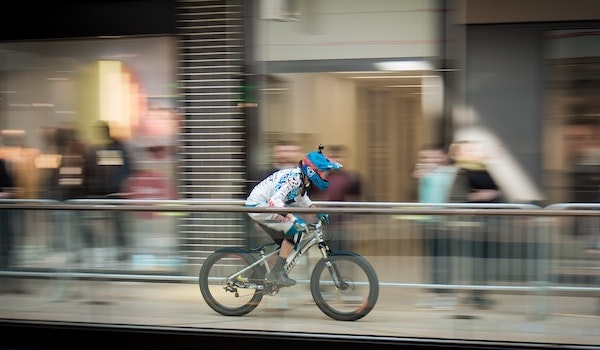

Hardcourt polo has come to the Triangle! VC is currently seeking more members to fill out our Durham team, to complement and compete with the Raleigh Club. What the heck is Hardcourt Bike Polo, you ask? Well, it's like that fancy game played on horseback, but reinvented by bike messengers. Your steed is a fixed gear, the gear is lighter and fun is guaranteed. Check out The North American Hardcourt Association for more info.
Critical Mass
Every 2nd Saturday, join us at a new location to pedal for progress. Critical Mass events aim to bring awareness of bike safety issues by demonstrating our numbers in the streets. We dialogue with local leaders and advocate for a safer, more accessible, pedal-powered Durham. Fill out the form on our Contacts page to get locations before each ride.
Bike + Brew

Meet us at the shop on Wednesdays at 6pm for a sunset ride through town that always ends at a brewery. We've got friendly local beertenders lined up every week for a flight tasting and brewery tour. All you need is a helmet, some wheels, $20 and a 21+ ID. Safety lights and/or reflective vests for night biking can be purchased or borrowed if needed.
Pedal + Pinot

Like Bike + Brew, but for wine! We meet at the shop every Thursday at 6pm and take a leisurely ride to a bar or bottle shop. We lean toward natural wine, but the traditional stuff is always on the table, too. Only taste "notes of grape"? No problem. Pedal + Pinot is welcome to wine nerds and noobs alike.
Alley Cat Races

Shhhhhh... wanna get fast and freaky? Sign up for night race info through our Contacts form. *Vicious Cycles does not officially sanction unsanctioned back-alley races and only allegedly participates in these allegedly extremely good times.